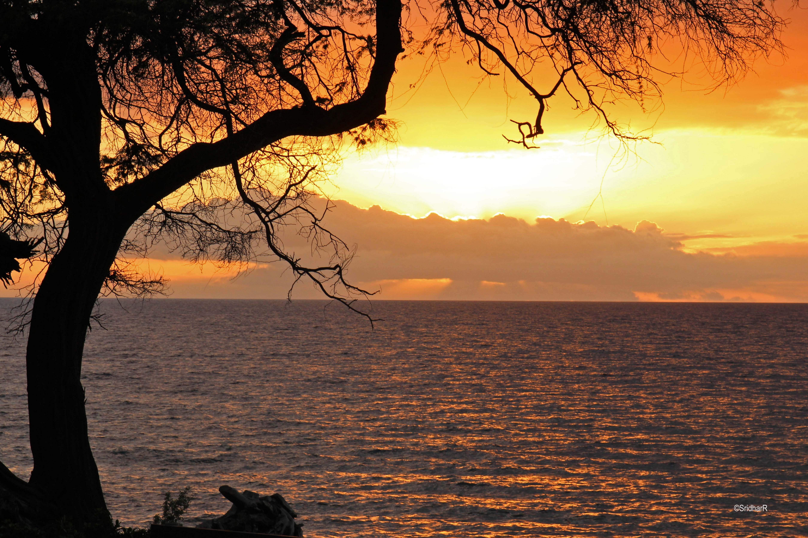

Most of the landscape photographs were taken on a Canon T5i and taken midday. Lower shutterspeed were used for stationary landscapes, but typically increased when non-stationary elements (flowing water, trees blowing in the wind) were present. ISO's typically range from 100 to 200 for these shots.


